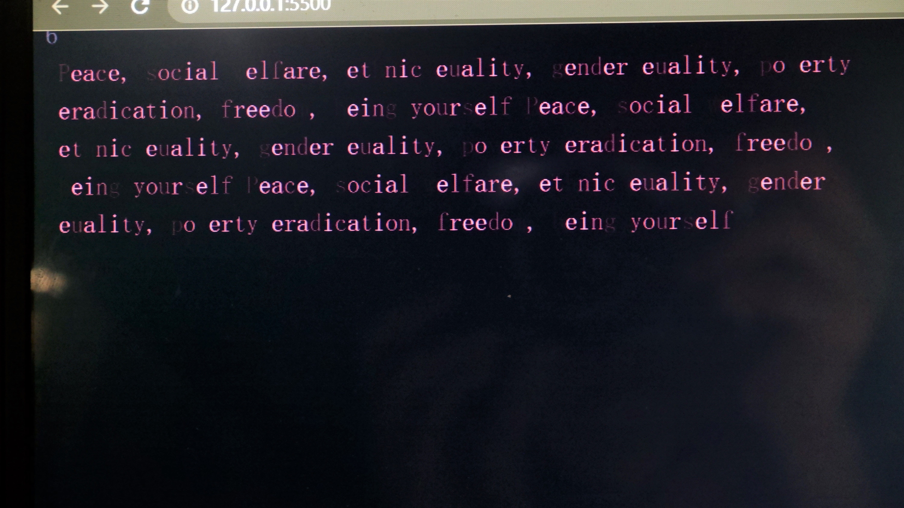
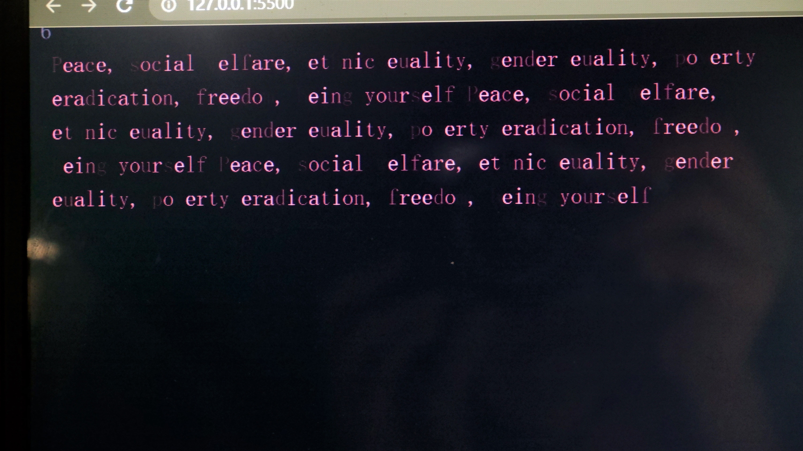

Vimeo Video
Video from this Light of Darkness
Images
 

我将心理对抗与计算机世界结合在一起。其中一个内部结构是神经元结构。通过这个装置，我想探索对立的边界在哪里，以及对立中必然会产生的对立效果在哪里。这一切的平衡是什么。对于这个模型，我使用了犀牛模型并3d打印了神经元结构，但由于一些结构不容易打打印，我使用光纤和白纸手工制作。

当观众想表达他们的反对意见时，我用声音传感器作为输入。灯带将变亮以表示注意力的增加。观众的声音越大，光带就越亮，注意力也随之增加。背面选择使用投影仪将p5js画面投影到背面，p5js画面也是和声音数据连接。当一个人的反对达到一定程度时，与其反对词相反的词会出现在后面。例如，如果反对词本身就是战争，那么和平这个词就会出现。当用户说话声音更大时，他们面前的彩色灯光会变得更亮，从而阻止用户看到投影的单词。如果人们渴望看到“和平”这个词，他们就需要大声反对战争，当面对反对现象时，他们是放弃发声和寻求其他途径的机会，还是继续反对和突破对立。这样，以探讨反对的作用与反作用